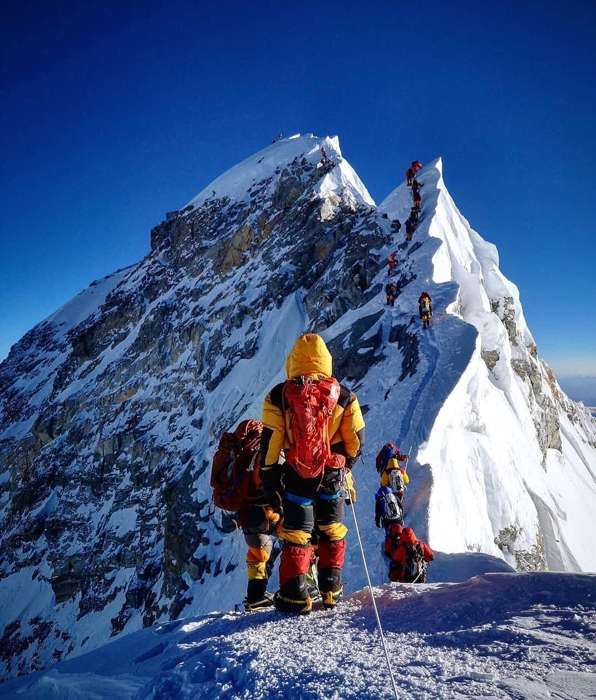

El senderismo es una actividad deportiva no competitiva,en la cual consiste en recorrer distintas zonas rurales o de montaña con la motivacion de recorrer pueblos y valles de una región o país, a través de caminos señalizados, preferentemente tradicionales, los cuales son sistema de vías de comunicación.
Sin mencionar el gran beneficio que tiene es decir es un buen ejercicio aeróbico, por lo que ofrece beneficios para la salud cardiovascular y para controlar o reducir el peso
| Experiencia recomendada | Montaña | Altura (metros) | Ubicación |
|---|---|---|---|
| Principiante | Monte Fuji | 3,776 | Japón |
| Intermedio | Torres del Paine | 2,800 | Chile |
| Intermedio | Kilimanjaro | 5,895 | Tanzania |
| Avanzado | Mont Blanc | 4,810 | Francia/Italia/Suiza |
| Experto | Everest | 8,848 | Nepal/Tíbet |